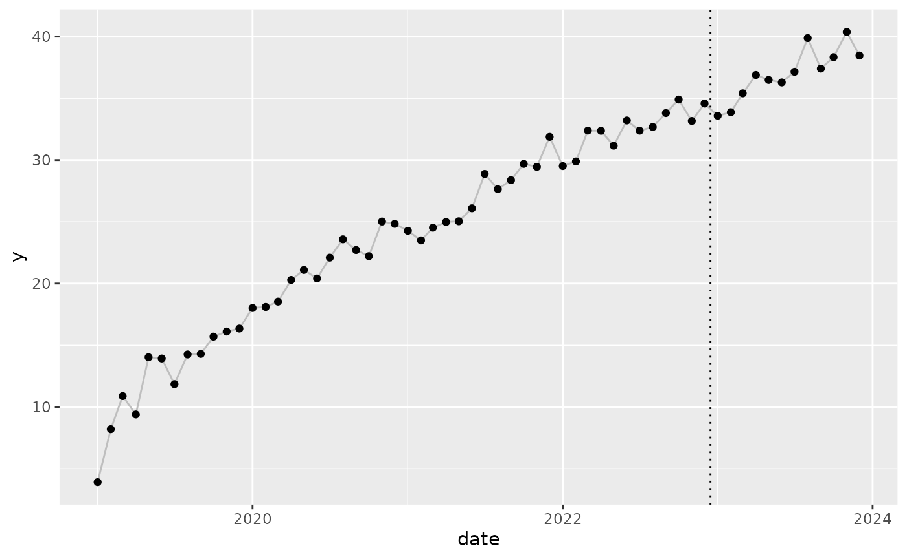
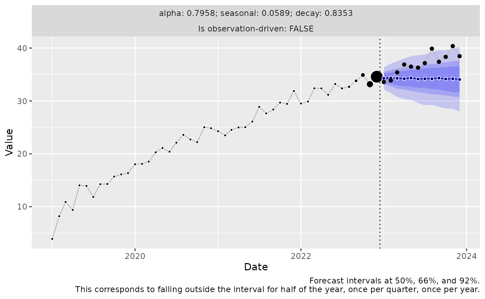
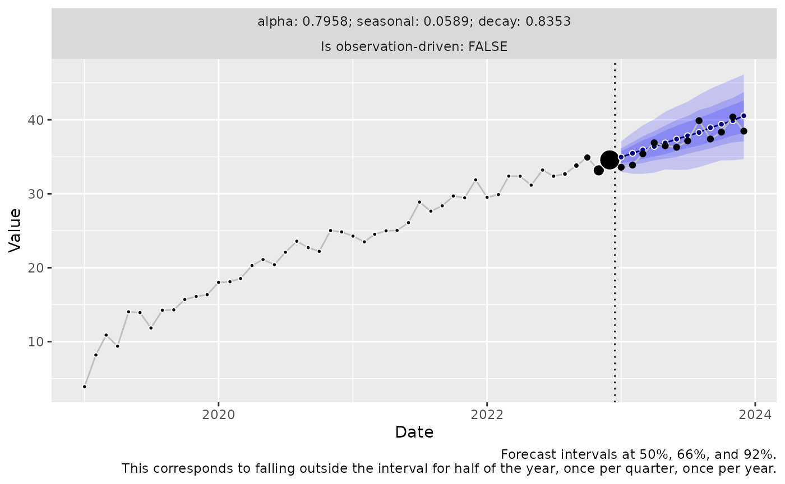
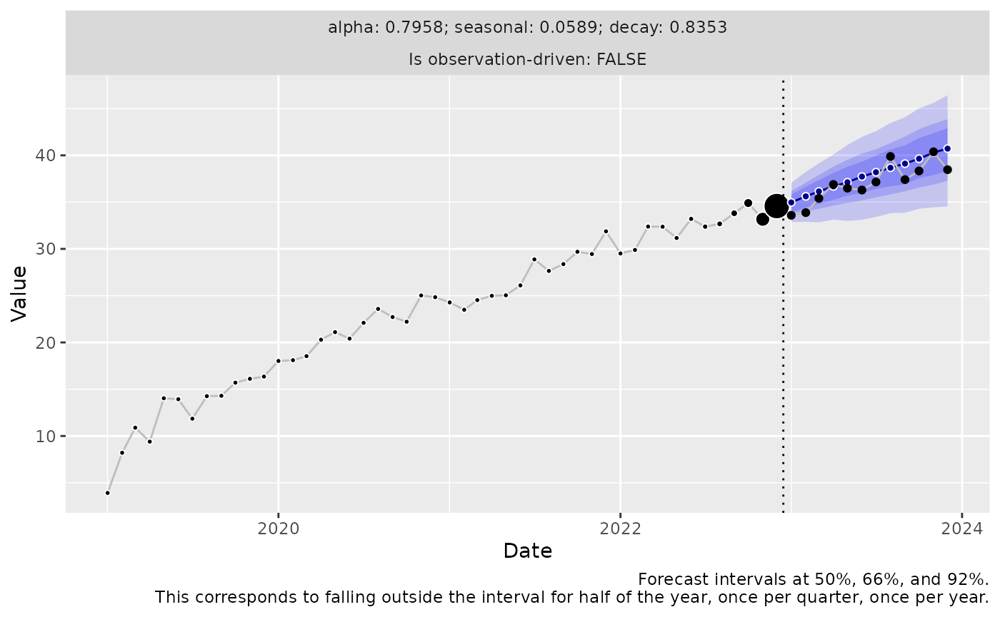
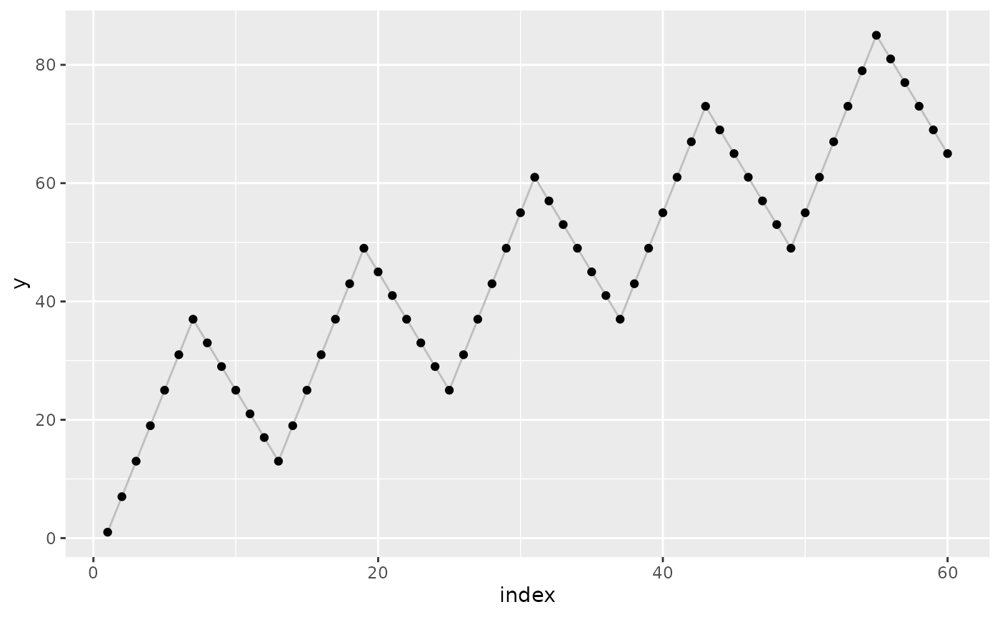
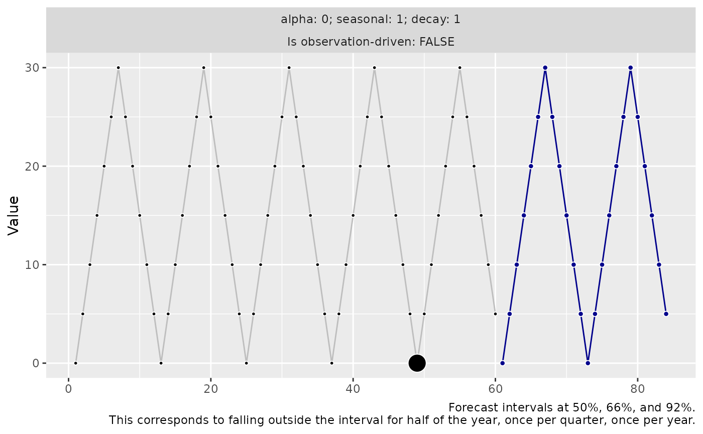
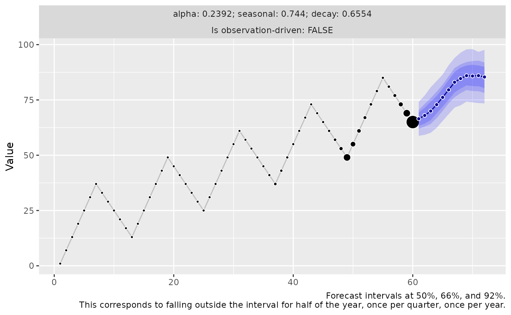
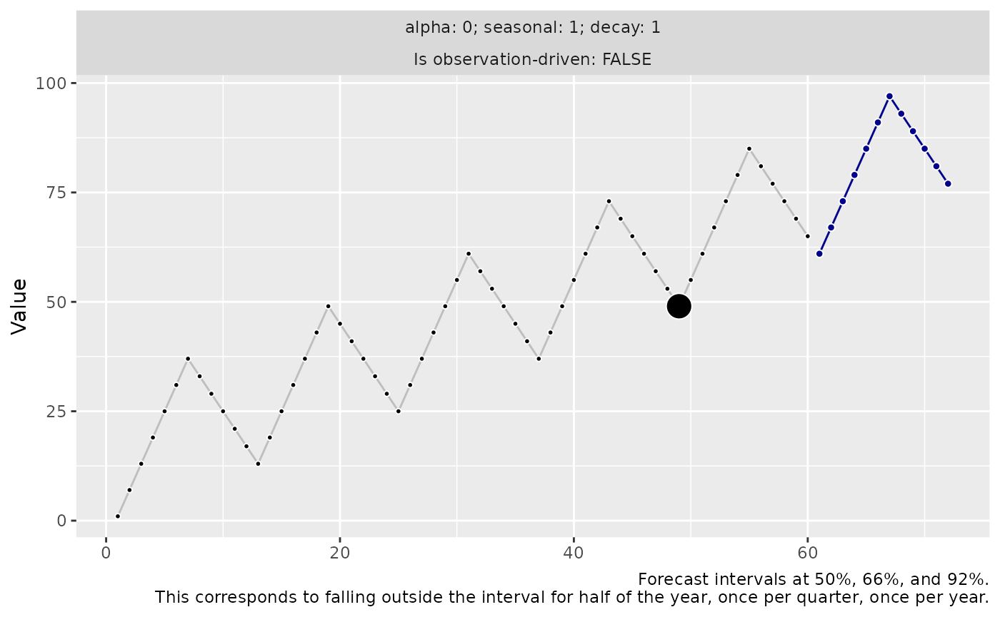

Forecasting Trends with `threedx`
Source:vignettes/articles/forecasting_trends.Rmd
forecasting_trends.RmdThe threedx model is not designed to forecast trends in
time series. As its predictions are a pure weighted average of
historical observations, the model does not extrapolate beyond the
limits of the historical data. Nevertheless, one can choose the
innovation function used during generation of the
forecast paths to capture the systematic error of the model.
To demonstrate the issue, let’s start with a simple trending time series that clearly continues to trend upward and has fairly little noise, and no trend component.
df <- data.frame(
date = seq(as.Date("2019-01-01"), as.Date("2023-12-01"), by = "month"),
y = sqrt(1:60) * 5 + rnorm(60)
)
df_train <- df[df$date < as.Date("2023-01-01"), ]
df_test <- df[df$date >= as.Date("2023-01-01"), ]
The best threedx can do, with no trend component to
speak of, is to base the next observation to nearly the full extent on
the most recent observation. When one can’t predict the trend,
predicting the same level from the previous observation is the best one
can do. The forecast is a straight line, while the actuals continue to
rise:
model <- learn_weights(
y = df_train$y,
period_length = 12L,
alphas_grid = list_sampled_alphas(include_edge_cases = TRUE),
loss_function = loss_mae
)
predict(
object = model,
horizon = 12L,
n_samples = 1000L,
observation_driven = FALSE,
innovation_function = draw_normal_with_zero_mean
) |>
autoplot(date = df_train$date, date_future = df_test$date) +
geom_line(aes(y = y), data = df_test, color = "grey") +
geom_point(aes(y = y), data = df_test) +
geom_vline(aes(xintercept = as.Date("2022-12-15")), linetype = 3)
If we inspect the model, we see that the one-step-ahead residuals have a clear bias (positive mean and median) as the model doesn’t predict the on-average increase month-over-month:
print(summary(model$residuals))
#> Min. 1st Qu. Median Mean 3rd Qu. Max. NA's
#> -1.8954 -0.4693 0.5569 0.6218 1.4752 2.9873 12We can make use of this bias in the residuals at prediction time.
By choosing an innovation function that does not enforce a zero-mean assumption on the innovation samples projected into the future (as standard implementations of forecasting approaches such as ARIMA and ETS do), we can add this bias onto the forecast, and thereby offset the model’s bias.
Using draw_normal_with_drift() will use the sample mean
of the residuals to draw innovations (in contrast to the hardcoded mean
at zero used in draw_normal_with_zero_mean() above):
predict(
object = model,
horizon = 12L,
n_samples = 1000L,
observation_driven = FALSE,
innovation_function = draw_normal_with_drift
) |>
autoplot(date = df_train$date, date_future = df_test$date) +
geom_line(aes(y = y), data = df_test, color = "grey") +
geom_point(aes(y = y), data = df_test) +
geom_vline(aes(xintercept = as.Date("2022-12-15")), linetype = 3)
We can also drop the normality assumption and bootstrap entirely from residuals (which here doesn’t make a big difference as the time series was generated from a Normal distribution):
predict(
object = model,
horizon = 12L,
n_samples = 1000L,
observation_driven = FALSE,
innovation_function = draw_bootstrap
) |>
autoplot(date = df_train$date, date_future = df_test$date) +
geom_line(aes(y = y), data = df_test, color = "grey") +
geom_point(aes(y = y), data = df_test) +
geom_vline(aes(xintercept = as.Date("2022-12-15")), linetype = 3)
The Innovation Function Is Not A Panacea
While the choice of the innovation function is a remedy for the missing trend component in the above example, it doesn’t work quite as neatly in all cases.
By using an innovation function that doesn’t enforce a zero-mean, the forecast can be improved for time series that consist of a strong and mostly linear trend.
However, if the trend is not as uniform across past observations, or if there are seasonal components as well, the forecast can be much trickier.
As soon as the model tries to compensate the trend in some way during
training (instead of using an alpha close to 1), and
thereby messes up a clean prediction of the seasonal component, there is
not much that can be fixed by the innovation function choice.
Consider the following extreme example to make the problem tangible. We will forecast a monthly seasonal time series that trends upward with every year by three additional units. To make the relationship between trend, model, and residuals clear, we don’t add any noise component:
component_season <- rep(c(0,1,2,3,4,5,6,5,4,3,2,1), times = 5) * 5
component_trend <- 1:60
y <- component_season + component_trend
First, note that threedx can forecast the seasonal
component perfectly if it’s the only component:
threedx::learn_weights(
y = component_season,
period_length = 12L,
alphas_grid = list_sampled_alphas(include_edge_cases = TRUE),
loss_function = loss_mae
) |>
predict(
horizon = 24L,
n_samples = 1000L,
observation_driven = FALSE,
innovation_function = draw_normal_with_zero_mean
) |>
autoplot()
However, when trend and seasonality are combined, the model training results in an unfortunate parameter choice that relinquishes the perfect seasonality prediction to accompany the trend in a desperate fashion.
The reason for this is the loss function: The mean absolute error
(used here via loss_mae()) is reduced by trading off the
error due to the trend with the error due to the seasonality. It does
not accept the bias in the one-step-ahead predictions that would remain
due to the trend for models that predict the seasonality perfectly.
threedx::learn_weights(
y = y,
period_length = 12L,
alphas_grid = list_sampled_alphas(include_edge_cases = TRUE),
loss_function = loss_mae
) |>
predict(
horizon = 12L,
n_samples = 1000L,
observation_driven = FALSE,
innovation_function = draw_normal_with_drift
) |>
autoplot()
We can recover the optimal model choice (in combination with the drifting innovation function) by using a loss function that ignores the bias. Let’s redefine the mean absolute error, removing the mean bias:
loss_mae_ignoring_bias <- function(y_hat, y, ...) {
residuals <- y - y_hat
residuals_zero_bias <- residuals - mean(residuals)
mean(abs(residuals_zero_bias))
}Using loss_mae_ignoring_bias() instead of
loss_mae(), the model that perfectly removes the seasonal
error is chosen as the trend bias is ignored during training. During
prediction, the bias is compensated by the innovations with drift.
threedx::learn_weights(
y = y,
period_length = 12L,
alphas_grid = list_sampled_alphas(include_edge_cases = TRUE),
loss_function = loss_mae_ignoring_bias
) |>
predict(
horizon = 12L,
n_samples = 1000L,
observation_driven = FALSE,
innovation_function = draw_normal_with_drift
) |>
autoplot()
But again, this is unlikely to be a panacea.